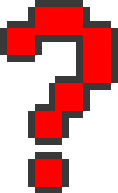
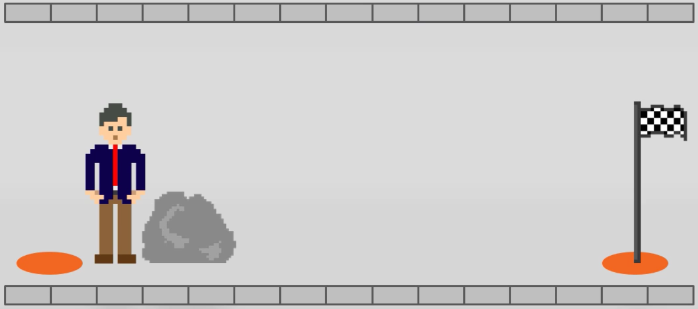
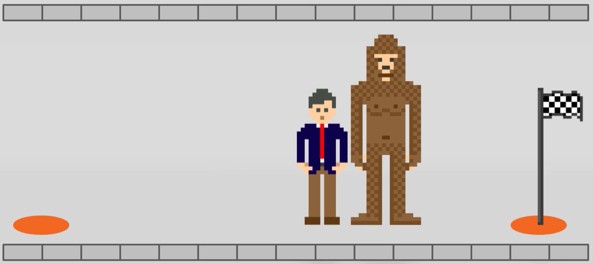
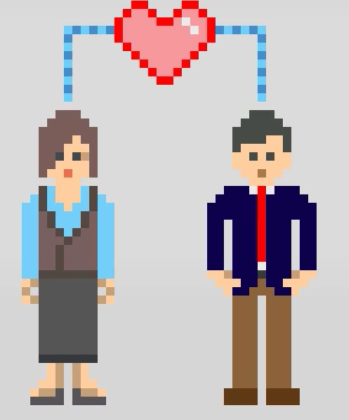
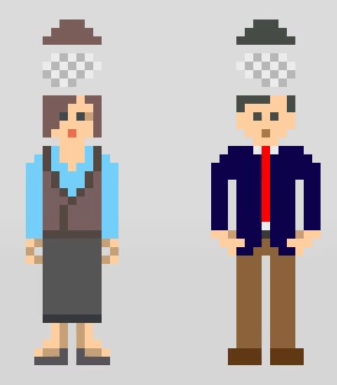
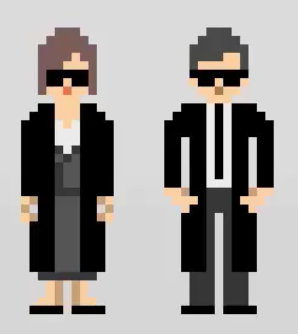
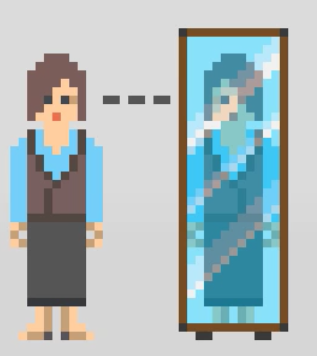

Проактивный подход к разработке
Новиков Иван
Новиков Иван
@jonny
Моя позиция может не совпадать с позицией компаний, в которых я работаю
Кто я?

Novikov Ivan
CTO at Amiforus & Backend engineer at ozon.travel
Agenda
Определения
Установки
Целеполагание
Обучение
От реактивности к проактивности

С чего начнем?

Новая реальность
Новая реальность

Новая реальность
И так... мы в новой реальности, попробуем в ней разработать продукт?
Прежде, чем начать

User-centric разработка
Что мы можем исследовать?

User Experience (UX)
Свои привычки и искажения восприятия (biases)
Какие ожидаем результаты?

Пользователь
Счастливый, удовлетворенный
Продуктивный
Мы
То же самое, что и он + $$$
Усовершенствованный процесс
Как предотвращать неприятности?

Постоянный рассчет метрик и отклонений
Цели

Цели

Цели

Цели

Цели

Минимизировать диссонанс
Диссонанс (friction)

Диссонанс (friction)

Когнитивный
Эмоциональный
Физический
Диссонанс (friction)

Постоянная модернизация процесса

Устраняем предубеждения

Изучение когнитивных искажений

Устранение когнитивных искажений
Тендеция не компенсировать искажения восприятия коллег
Тенденция искать и интерпретировать информацию в искаженном восприятии коллег
Тендеция людей, чтобы вещи вокруг оставались примерно такими же
Что начать читать завтра?
The Goal: A Process of Ongoing Improvement (Eliyahu M. Goldratt, Jeff Cox)